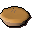
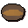
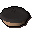

Uncooked meat pie

| Config name | uncooked_meat_pie |
| Item id | 2319 |
| Value | 8 gp |
| Weight | 500g |
| Members | No |
| Tradeable | Yes |
| Stackable | No |
| Defined in | scripts/skill_cooking/configs/cooking_inv/configs/pies/pies_uncooked.obj |
Uncooked meat pie
This would be much healthier cooked.
How to make
| Skill | Level | XP | Ingredients | Tool | How | Where | Makes |
|---|---|---|---|---|---|---|---|
| Cooking | 20 |  Pie shell | use on item | 1 | |||
| Cooking | 20 | use on item | 1 |
Used to make
| Skill | Level | XP | Ingredients | Tool | How | Where | Makes |
|---|---|---|---|---|---|---|---|
| Cooking | 20 | 80.0 | Uncooked meat pie | use on object | range | can spoil into  Burnt pie; range only: You need a proper oven to cook that. |